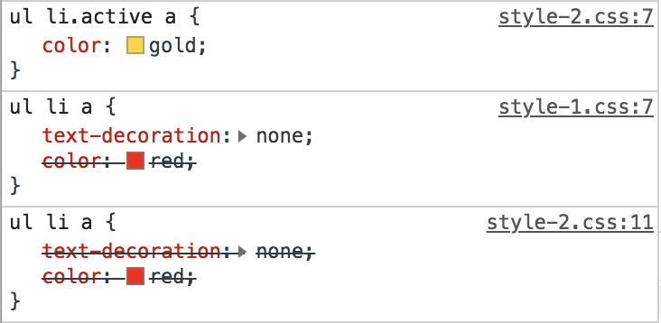

CSS คือ ตัวที่ช่วยจัดรูปแบบ และการตกแต่งหน้าเว็บของเรา บางคนอาจจะเคยเจอเมื่อใส่ Style นั้นแล้ว แต่ไม่เกิดผลลัพธ์ตามที่หวังไว้ จึงทำการแก้ปัญหาโดยใส่ !importance เข้าไปเพื่อให้มีค่าความสำคัญมากกว่า แต่การทำวิธีนี้ไม่ใช่สิ่งที่ควรจะทำ เพราะต่อไปหากมีการทำขยายต่อไปเป็น project ที่ใหญ่ขึ้นอาจจะทำให้ การทำงานมีผลเสียมากกว่าผลดีในการเลือกใช้ style ต่างๆ
การสร้าง style ให้กับ element สามารถทำได้หลายแบบ
ทั้งการเขียนแบบ inline เช่น style="color:red" เป็นต้น
หรือ การเขียนแบบใช้ selector ซึ่งเป็นที่นิยมเขียนกันมากที่สุด
ซึ่งการเขียนแบบนี้มีหลายแบบ ซึ่งแต่ละแบบจะมีค่า Specificity
ที่แตกต่างกัน และสามารถจัดกลุ่มการเขียน style แต่ละแบบที่มีค่า
specificity ที่มีค่าเท่ากันได้ดังนี้
(1) Inline style
(2) ID selectors (พวก #)
(3) Class selectors, Attributes selectors, Pseudo-classes
(4) Type selectors, Pseudo-elements
(5) Universal selector, Combinators, Negation pseudo-clas
CSS Specificity คือ ค่าบางอย่างที่จะบอกเว็บว่าควรเลือกใช้ style ตัวใดมาแสดงผลกับ element ต่างๆ ของเรา โดยดูจากค่าความสำคัญ
แบบที่ (1) มีค่า specificity = 1000
แบบที่ (2) มีค่า specificity = 100
แบบที่ (3) มีค่า specificity = 10
แบบที่ (4) มีค่า specificity = 1
แบบที่ (5) มีค่า specificity = 0 (ไม่มีค่า)
div a {...} = 1+1 = 2
.box a {...} = 10+1 = 11
div h1 a apan {...} = 1+1+1+1 = 4
.page h1 #title {...} = 10+1+100 = 111
a:hover = 100+10+1+10 = 121
li:first-child h2 .title = 1+10+1+10 = 22
สำหรับ !importance นั้นหากมีการใช้งานก็จะมีการบังคับใช้ทันที โดยไม่สนใจ specificity อื่นๆ เพราะ !importance เหมือนมีค่า specificity เป็น infinity นั่นเอง ดังนั้นจึงไม่ควรนำมาใช้งานจะดีกว่า
ไฟล์ Home.html ที่มีการเชื่อมโยง style2.css และ style1.css ตามลำดับ
ไฟล์ INDEX.html ที่มีการเชื่อมโยง style1.css และ style2.css ตามลำดับ
ภาษา CSS มีการอ่านเหมือนกับภาษาอื่นๆ ทั่วไป คือมีการอ่าน code จากบนลงล่าง แต่ browser จะเอา selector ของอันที่อยู่ล่างสุดมาใช้กับ element
จากภาพจะเห็นได้ว่า browser นำ style ของ style1.css มาใช้ก่อน
จากภาพจะเห็นว่า แต่ละ style นั้นจะมีค่า specificity ที่ต่างกัน
(1) มีค่า specificity = 1+1+10+1 = 13
(2) มีค่า specificity = 1+1+1 = 3
(3) มีค่า specificity = 1+1+1 = 3
ดังนั้น browser จึงทำการเลือก style ที่มีค่า specificity ที่มีค่ามากที่สุด ก็คือแบบแรกนั่นเอง